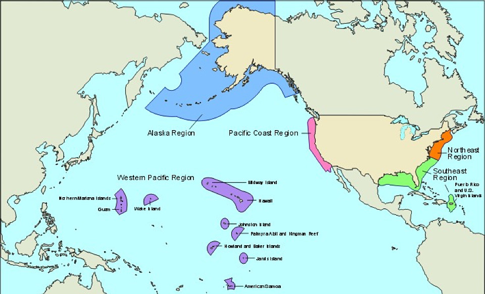
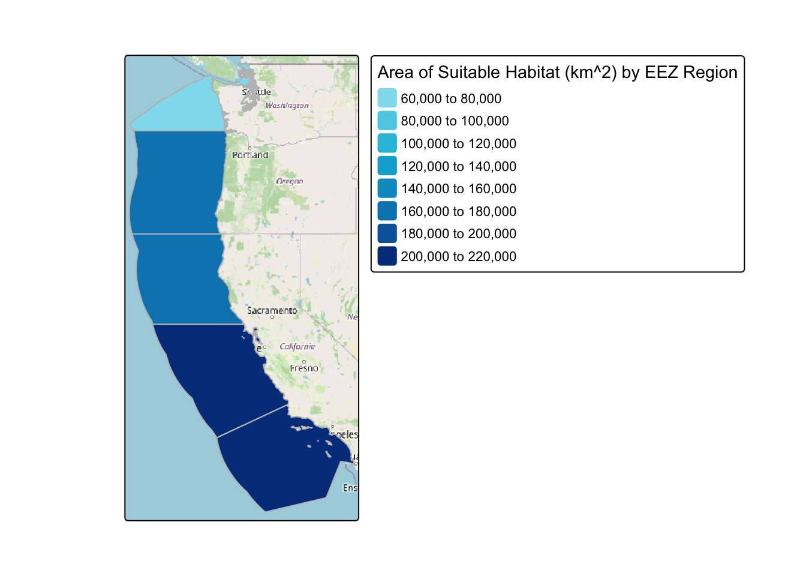
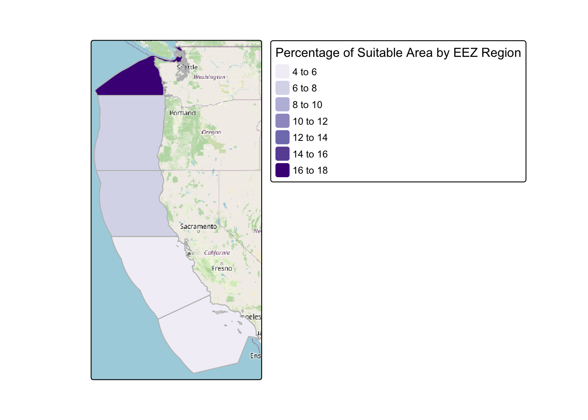
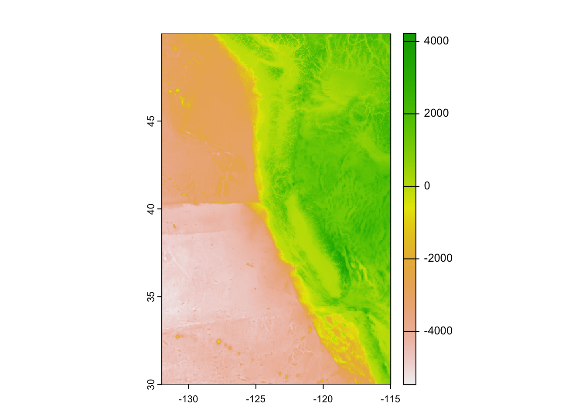
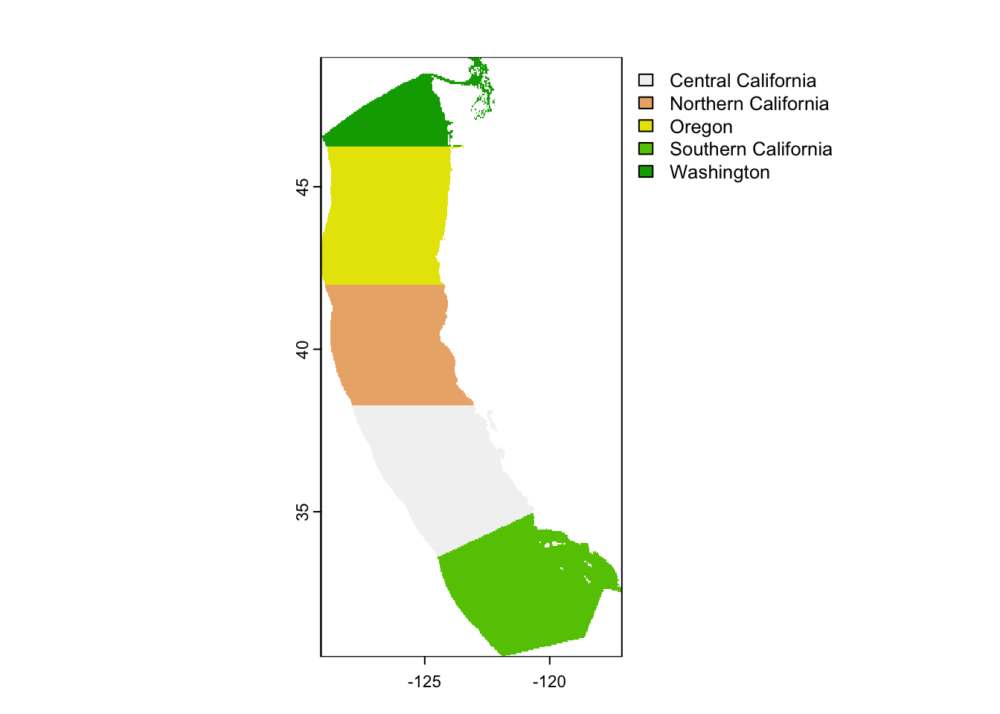

species_function = function(species_name, min_temp, max_temp, min_depth, max_depth){
# read in the shapefile for the West Coast EEZ
wc_eez <- st_read(here('./data2/wc_regions_clean.shp'))
# read in your SST rasters
filelist <- list.files("./data2/average_annual/", full.names = TRUE)
filelist
# Make SST rasters into a raster stack
sst <- rast(filelist)
# Read in bathymetry raster (`depth.tif`)
depth <- rast(here("data2", "depth.tif"))
# reproject any data not in the same projection
sst <- project(sst, "EPSG:4326")
st_crs(wc_eez) == st_crs(sst)
st_crs(depth) == st_crs(sst)
#Finding the mean SST
sst_mean <- app(sst, fun = "mean")
#Converting SST from kelvin to Celsius
sst_mean_cel <- sst_mean - 273.15
#Cropping depth to match extent of SST
new_depth <- crop(depth, sst_mean_cel)
#Resampling the depth data to match SST using nearest neighbor
new_depth_resample <- resample(new_depth, y = sst, method = "near")
#Reclassifying for sea surface temperature depending on species suitable conditions
rcl_sst <- matrix(c(-Inf, min_temp, NA,
min_temp,max_temp, 1,
max_temp, Inf, NA),
ncol = 3, byrow = TRUE)
#reclassifing the sst raster
sst_temp_rcl <- classify(sst_mean_cel, rcl = rcl_sst)
#Reclassifying for sea level depth depending on species suitable conditions
#Assumption: sea level is 0 so anything below sea level is negative
max_depth <- -(max_depth) #converting max depth to negative, representative of this assumption
rcl_d <- matrix(c(max_depth,min_depth,1,
-Inf, max_depth, NA,
min_depth,Inf,NA),
ncol = 3, byrow = TRUE)
#reclassifying sea depth level raster
sst_depth_rcl <- classify(new_depth_resample, rcl = rcl_d)
#Finding locations that satisfy both SST and depth conditions
suitable_locations <- lapp(c(sst_depth_rcl, sst_temp_rcl), "*")
#Next finding suitable cells within WC_EEZ:
suitable_regions <- crop(suitable_locations, wc_eez)
suitable_regions <- mask(suitable_regions, wc_eez)
#Finding the total area of grid cells:
area_grid <- expanse(suitable_regions)
#Finding total suitable area within EEZ:
eez_raster <- rasterize(wc_eez, suitable_regions, field = "rgn")
#Adding the area percent as another component to suitable area:
suitable_area <- cross_join(wc_eez, area_grid) %>%
mutate(area_perc = (area/ area_m2)* 100 )
#Creating map for total suitable area by region
map1 <-
tm_shape(suitable_area) +
tm_fill("area_km2",palette = (c("#90e0ef", "#48cae4", "#00b4d8",
"#0096c7", "#0077b6", "#023e8a")), title = "Area of Suitable Habitat (km^2) by EEZ Region") + tm_layout("Suitable Area for Oysters by EEZ Region", legend.outside = TRUE) +
tm_borders(col = "gray") +
tm_basemap("OpenStreetMap")
print(map1)
#Creating map for percentage of total suitable area by region
map2 <-
tm_shape(suitable_area) +
tm_fill("area_perc",palette = "Purples", title = "Percentage of Suitable Area by EEZ Region") +
tm_layout("Suitable Percentage of Area for Oysters by EEZ Region", legend.outside = TRUE) +
tm_borders(col = "gray") +
tm_basemap("OpenStreetMap")
print(map2)
}Project Repository Located Here
About This Project
“As the human population looks set to reach 10 billion people by 2050, our food systems will be under intense pressure to produce animal protein for an increasing population,”(Gentry). This is an important problem to consider because, with scarcity of animal-rich protein sources, we need to turn to other alternatives. This is where marine aquaculture can play an important role, which is defined as the breeding, rearing, and harvesting of aquatic plants and animals (NOAA). Sustainable seafood production can be a signfiicant contributor to this global food supply crisis, and in order to plan for future marine aquaculture projects and initiatives, we need to consider a few important implications, such as ocean depth, temperatures, logistics traffic, protected areas, etc.
In this analysis, given a species input, I am going to analyze what the determined Exclusive Economic Zones (EEZ) are on the West Coast of the United States that would be best suited to developing marine aquaculture for that species of interest.

Analysis Highlights:
- Combining vector and raster data
- Resampling raster data using
resamplefunction - Masking raster data using
rasterpackage - Operations on raster data
- Creating interactive maps using
leaflet - Designing a function for any species
About the Data:
When considering suitability for marine aquaculture of a specific species, we need to consider two primary conditions: Depth and Temperature. When finding suitable EEZ regions, we are going to need data on the depth and surface temperature details (datasets 1 and 2). We can then find suitable regions using the Exclusive Economic Zones (dataset 3), which are specific zones that the United States and coastal nations have rights and jurisdiction over the resources in those waters. More details can be found in the shared link above.
Dataset 1: Sea Surface Temperature
This data is average annual sea surface temperature (SST) from the years 2008 to 2012. This will be used to characterize the average sea surface temperature within the EEZ region.To find the averages for each year, I created a raster stack of each year titled sst (sea surface temperature).
This data was generated from NOAA’s 5km Daily Global Satellite Sea Surface Temperature Anomaly v3.1
Dataset 2: Bathymetry
This data is raster data characterizing the depth of the ocean, defined as a raster titled depth.
This data was generated from General Bathymetric Chart of the Oceans (GEBCO).
Dataset 3: Exclusive Economic Zones
To narrow the focus for this analysis, I will just be focusing on West Coast US Exclusive Economic Zones.
This data was used as a shapefile titled wc_eez.
This data was generated from Marineregions.org.
Final Results
I created a function (outlined below) that utilizes the following inputs:
species_name: your species of interest. Note: this should be a realistic species for human commercial consumption.
min_temp: minimum suitable temperature in Celsius, found on SeaLifeBase
max_temp: maximum suitable temperature in Celsius, found on SeaLifeBase
min_depth: minimum meters below sea level for optimal growth, found on SeaLifeBase
max_depth: maximum meters below sea level for optimal growth, found on SeaLifeBase
The outputs of the function create two maps showcasing the total suitable area for the species’ growth as well as the percentage (%) of suitable area for the species’ growth.
In the examples below, this output is showing results for species of oysters:
 
Conclusion
To conclude, I am able to indicate that the largest area of suitable habitat for oysters in the EEZ region is in Central California. The percentage of suitable area indicates the highest percentage of suitable area is in the Washington region of the West Coast EEZ. This data is helpful for guiding actions or policies on sustainable marine aquaculture for oyster species, indicating those projects should occur in those regions for the best results.
In a future analysis, I would aim to look at existing population data of oysters or other species in this area to help drive decisions on likely size, requirements, and budgets for a marine aquaculture project on oyster species.
Details of the Data Analysis
For my data analysis, I completed a number of steps before getting to mapped suitable areas. These steps included cleaning, wrangling, plotting, and manipulating the datasets that I had.
First, I needed to do some basic data cleaning. This included re-projecting my data to make sure all was using the same coordinate reference system to accurately compare and layer maps.
Second, I calculated the mean sea surface temperature over the raster stacks and converted it to Celsius. This provided me with a raster of means for the entire West Coast. In order to just look at our Exclusive Economic Zones, I used
cropto reduce the raster data to our area of interest. Then, because the resolution of the data did not match, I also used the nearest neighbor method usingresampleto make sure the resolutions matched and checked that the coordinate reference systems were the same.Third, I plotted the data. In the visualization below, I can see the variation in average sea surface temperatures in Celsius for the West Coast EEZ.

Fourth, I needed to reclassify the data (using
reclassify) to meet both depth and sea temperature specifications for the species of interest. As an example in this analysis, I will use oysters, however the function created as part of this analysis will represent any species of choosing. Given I wanted to understand suitable oyster regions, I found information on species depth and temperature requirements on SeaLifeBase.This was used to find information on oyster’s suitable sea surface temperature and depth specifications which was determined to be between 11 and 30 degrees Celsius and an optimal depth of 0-70 meters below sea level.Fifth, I wanted to determine the total suitable area within each EEZ in order to rank specific zones/regions by priority. To do so, I found the total area of suitable locations within each EEZ using
crop,mask,expanse, andrasterize. I could then find the total suitable area within each EEZ region, as seen from the plot below: Lastly, I cross-joined the data for suitable area by region on to the EEZ data to plot them in the same map and calculated the percentage of area using the total grid area of the West Coast EEZ (calculated using
expanse).
After all of the six steps in the analysis, I had the data in order to plot my final results (as seen above).
Sources:
Gentry, R.R., Froehlich, H.E., Grimm, D. et al. Mapping the global potential for marine aquaculture. Nat Ecol Evol 1, 1317–1324 (2017). https://doi.org/10.1038/s41559-017-0257-9
National Oceanic and Atmospheric Administration (NOAA). Understanding Marine Aquaculture. Retrieved from https://www.fisheries.noaa.gov/insight/understanding-marine-aquaculture#:~:text=Marine%20aquaculture%20refers%20to%20the,salmon%2C%20and%20other%20marine%20fish.
National Oceanic and Atmospheric Administration. (NOAA). 2023. Exclusive Economic Zone (EEZ). Retrieved from https://oceanservice.noaa.gov/facts/eez.html